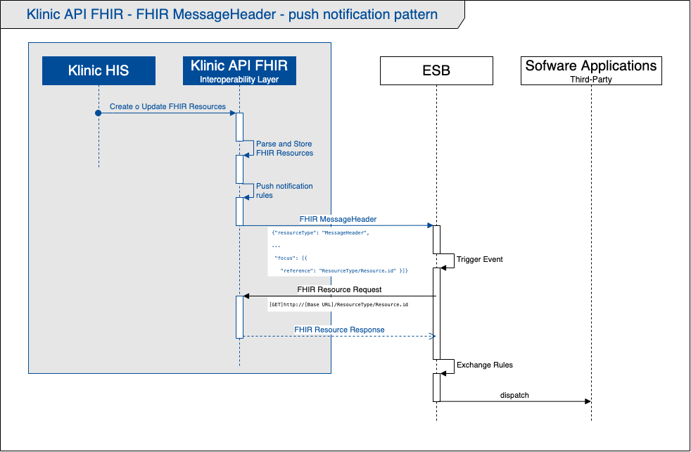

Klinic API FHIR Implementation Guide: IG Release 1 - Digital Ware S.A.
1.0 - trial-use
Klinic API FHIR Implementation Guide: IG Release 1 - Digital Ware S.A. - Local Development build (v1.0). See the Directory of published versions
The operation of Klinic API FHIR is based on the resource-oriented architecture (ROA), using RESTful API as an exchange mechanism, to guarantee the availability of information through HL7 FHIR resources.
In this way, other software applications in an organization’s information ecosystem can consult the Klinic API FHIR for the information they require through HTTP RESTful requests.
Using the same exchange mechanism, other authorized applications can send / publish information resources in Klinic API FHIR, which will be finally processed by Klinic HIS.
Section 3.1.0 of the HL7 FHIR standard documentation describes how the FHIR information resources are consulted (and managed), through the use of RESTful API.
Eventually, there are software applications whose interoperability mechanism is based on the event-driven architecture and require the reception of messages (generally HL7 V2x messages).
For these cases, Klinic API FHIR uses MessageHeader type FHIR resources, which allow notification through messaging events (push), the creation or update of certain resources.
Digital Ware has designed a MessageHeader resource profile (Klinic FHIR Message), used by its interoperability layer to support this notification pattern.
The definition of what types of resources should be notified and their delivery rules are programmed in the interoperability layer (Klinic API FHIR).
The MessageHeader resource sent by the interoperability layer contains a minimum payload, which is limited to the type of resource focus and its id (or eventually its end point).
Based on this information, the application receiving the message (MessageHeader) can proceed to consume / read (GET) the resource in Klinic API FHIR.
This interaction pattern in Klinic API FHIR is designed mainly for resources related to order information (MedicationRequest, ServiceRequest and SupplyRequest).
Number 2.47 of the HL7 FHIR standard documentation describes the structure and use of the MessageHeader resource.
The following diagram illustrates the notification pattern interaction sequence by sending MessageHeader type FHIR resources.

Once the creation or a change is registered in an electronic health record, Klinic-HIS generates the equivalent FHIR resource and proceeds to send it (POST, PUT) to its interoperability layer (Klinic API FHIR).
Klinic API FHIR processes the resource and stores it, to make it available for other software applications to consume (GET).
For certain types of cases, in which it is necessary for another software application to be notified about the creation or update of a resource available in Klinic API FHIR, the interoperability layer is in charge of processing a series of rules and proceeds to generate a MessageHeader resource, to be sent.
The interoperability layer sends a MessageHeader resource, which contains the focus reference to the type of resource and its id.
Based on the type of resource and its id, the application receiving the message (eg: ESB) can perform the consumption/reading (GET) of the resource in Klinic API FHIR.
If the application receiving the message is an ESB platform, according to business rules, it can proceed to transform and send (distribute) the information to other software applications in the organization’s information ecosystem.
The MessageHeader.eventCoding element contains the code that identifies the event that this message represents.
The following codes have been defined for the Klinic FHIR Message profile.
| Code | Display | Definition |
|---|---|---|
| CREATE | Resource creation notification | Code indicating that the message event is notifying another system that a resource has been created in Klinic API FHIR. |
| UPDATE | Resource update notification | Code indicating that the message event is notifying another system that a resource has been updated in Klinic API FHIR. |
The following example contains a MessageHeader resource to notify the creation of a ServiceRequest type resource.
{
"resourceType": "MessageHeader",
"id": "d3c28245-6e76-4816-8bef-07bde3c45e7c",
"meta": {
"lastUpdated": "2021-02-09T14:23:17-05:00"
},
"eventCoding": {
"system": "http://digitalware.com.co/salud/fhir/CodeSystem/MessageEvent",
"code": "CREATE",
"display": "Resource creation notification"
},
"destination": [
{
"name": "ESB platform",
"endpoint": "http://127.0.0.1:8443/esb/end-point"
}
],
"source": {
"software": "Klinic API FHIR",
"endpoint": "http://127.0.0.1:7000/klinic-api-fhir"
},
"focus": [
{
"reference": "ServiceRequest/dc6a94cc-1946-4326-89c3-d27888a90f7e",
"type": "ServiceRequest"
}
]
}
The following example contains an update notification MessageHeader resource of a ServiceRequest type resource.
This example also exposes the use of an absolute URL to refer to the focus resource (type ServiceRequest).
{
"resourceType": "MessageHeader",
"id": "97848708-6ea4-4706-892d-bee737630488",
"meta": {
"lastUpdated": "2021-02-09T14:50:00-05:00"
},
"eventCoding": {
"system": "http://digitalware.com.co/salud/fhir/CodeSystem/MessageEvent",
"code": "UPDATE",
"display": "Resource update notification"
},
"destination": [
{
"name": "ESB platform",
"endpoint": "http://127.0.0.1:8443/esb/end-point"
}
],
"source": {
"software": "Klinic API FHIR",
"endpoint": "http://127.0.0.1:7000/klinic-api-fhir"
},
"focus": [
{
"reference": "http://127.0.0.1:7000/klinic-api-fhir/ServiceRequest/dc6a94cc-1946-4326-89c3-d27888a90f7e",
"type": "ServiceRequest"
}
]
}
The following example contains a MessageHeader resource to notify the creation of a ServiceRequest type resource.
<?xml version="1.0" encoding="UTF-8"?>
<MessageHeader xmlns="http://hl7.org/fhir">
<id value="d3c28245-6e76-4816-8bef-07bde3c45e7c"/>
<meta>
<lastUpdated value="2021-02-09T14:23:17-05:00"/>
</meta>
<eventCoding>
<system value="http://digitalware.com.co/salud/fhir/CodeSystem/MessageEvent"/>
<code value="CREATE"/>
<display value="Resource creation notification"/>
</eventCoding>
<destination>
<name value="ESB platform"/>
<endpoint value="http://127.0.0.1:8443/esb/end-point"/>
</destination>
<source>
<software value="Klinic API FHIR"/>
<endpoint value="http://127.0.0.1:7000/klinic-api-fhir"/>
</source>
<focus>
<reference value="ServiceRequest/dc6a94cc-1946-4326-89c3-d27888a90f7e"/>
<type value="ServiceRequest"/>
</focus>
</MessageHeader>
The following example contains an update notification MessageHeader resource of a ServiceRequest type resource.
This example also exposes the use of an absolute URL to refer to the focus resource (type ServiceRequest).
<?xml version="1.0" encoding="UTF-8"?>
<MessageHeader xmlns="http://hl7.org/fhir">
<id value="97848708-6ea4-4706-892d-bee737630488"/>
<meta>
<lastUpdated value="2021-02-09T14:50:00-05:00"/>
</meta>
<eventCoding>
<system value="http://digitalware.com.co/salud/fhir/CodeSystem/MessageEvent"/>
<code value="UPDATE"/>
<display value="Resource update notification"/>
</eventCoding>
<destination>
<name value="ESB platform"/>
<endpoint value="http://127.0.0.1:8443/esb/end-point"/>
</destination>
<source>
<software value="Klinic API FHIR"/>
<endpoint value="http://127.0.0.1:7000/klinic-api-fhir"/>
</source>
<focus>
<reference value="http://127.0.0.1:7000/klinic-api-fhir/ServiceRequest/dc6a94cc-1946-4326-89c3-d27888a90f7e"/>
<type value="ServiceRequest"/>
</focus>
</MessageHeader>